Wiley Going Western I invited a good friend
of mine to come out and ride
when I went roading. She's
a country girl and only rides
Western. So, she threw her
saddle up on Wiley and away
they went. It was nice to
keep hearing her say that he was
such a good horse. We were
out for a couple of hours.
We wandered around the trails
with some other riders, and also
took a fast trip around
the property. Wiley also helped whip in
the hounds and was perfectly
fine with them being around his legs.
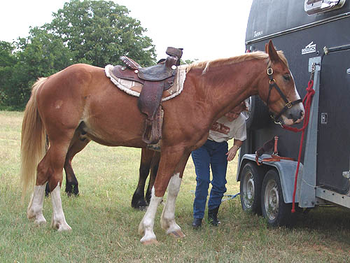
We don't know if he's
ever been ridden Western, but the saddle didn't seem to bother him at all.
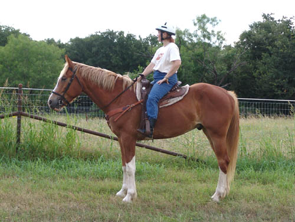
He looked quite nice
as a Western horse.
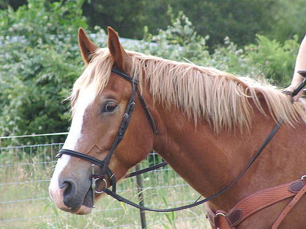
I had to catch a close
up while he was watching the hounds. He's got a little bit of sunburn on
hs nose and that mane is getting a little out of control....
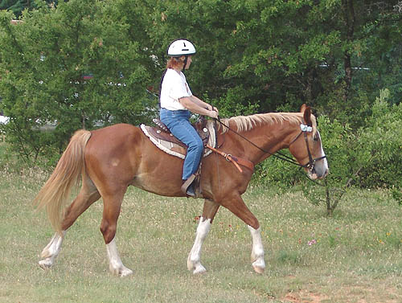
Shirley walked him around
to get a feel for him.
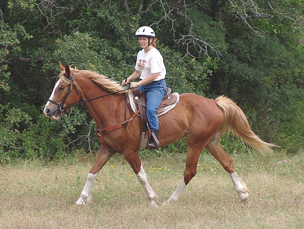
Then she got to see
how his trot felt. He's very light and airy in the trot and canter.
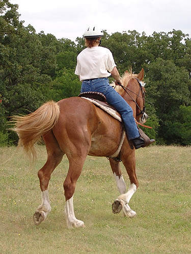
He's barefoot all the
way around, and it's time for the farrier again.
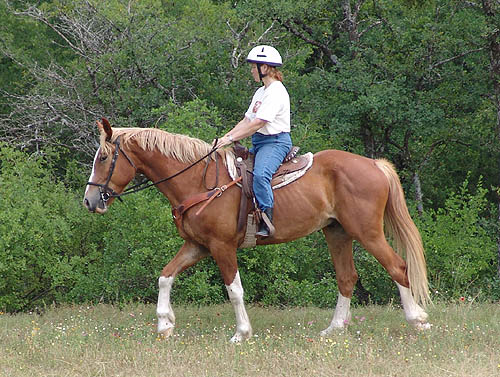
He looks bulkier in
pictures than in person. He's got big legs and feet, but his body needs
to catch up a bit. He sticks right under 15.2. Shirley's last horse was
16 hh, so she was happy to ride something that was easier to get on.
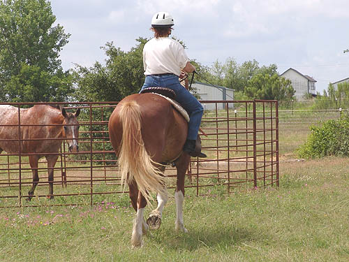
There were other horses
out. Wiley does notice them, but he's been around enough groups of horses
that they don't concern him.
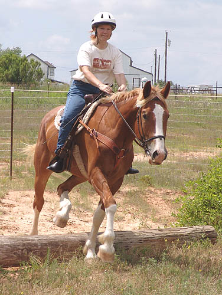
Shirley had fun taking
him over little obstacles that are around the place. He's got no problem
using those hocks.
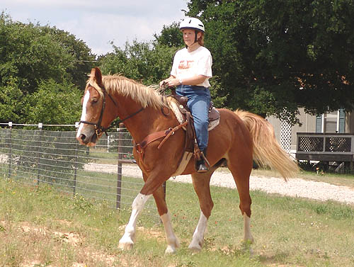
He's careful over uneven
ground.
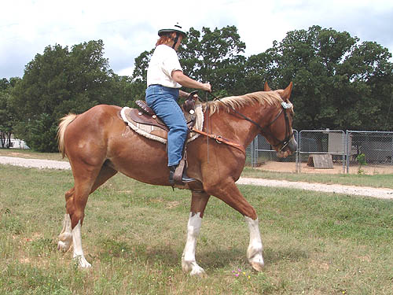
She did a little playing
around with bending. He bends easier to the left than the right (I'm left
handed...).
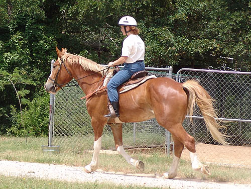
Trotting down the road.
The gravel didn't seem to bother him.
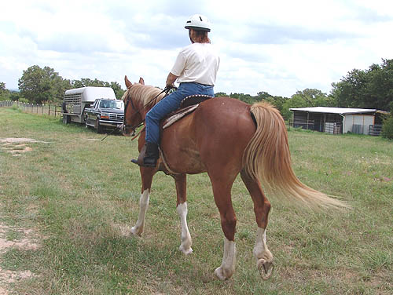
Heading back to the
trailers after a nice ride. No canter pictures, because I was also riding,
but we had a nice canter (or lope) along the gravel road.
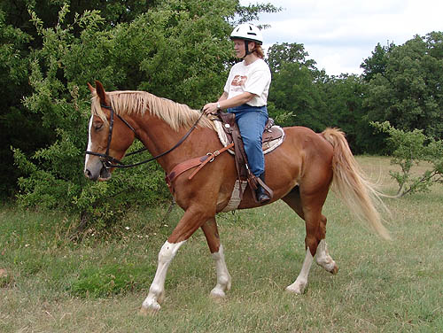
Still not tired, but
ready for a hose down and some time to snack on the grass.